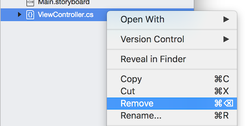
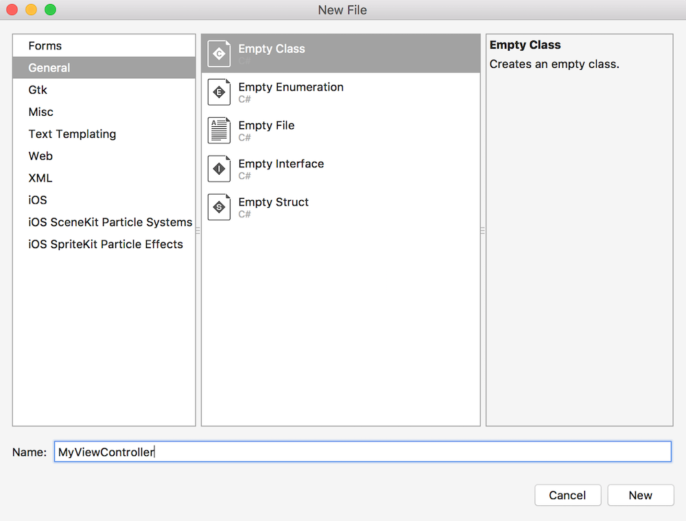

Duration
10 minutes
Lab Goals
The primary goal of this lab will be to disable the default Storyboard UI from the TipCalculator project you created in the previous exercise and replace it with a code-based UIViewController which will be set as the RootViewController for the application.
Required assets
The provided Part 02 Resources folder contains a subfolder named Completed with a solution you can use to check your work.
High-level steps
Use the following high-level steps to complete the exercise, step-by-step instructions are provided below that if you need any guidance.
- You will start by replacing the existing View Controller source file in the solution with a new C# source file.
-
The class will need to derive from
UIViewController. -
You will create and assign a new
UIWindowinstance in the AppDelegate.cs source file as part of theFinishedLaunchingmethod. -
Then, you will then create an instance of your new View Controller and assign it to the
Window.RootViewControllerproperty. -
Next, you will call the window's
MakeKeyAndVisiblemethod to make the window visible on the device and mark it as the primary, interactive window. - As a final step, you can compile the application to make sure it's all constructed properly - we will talk about how to run it next.
Steps
Add a new UIViewController to the project
The Single View App template created both a Storyboard UI and a View Controller with some basic overrides that is linked to the UI. We want to start from scratch in this app so in this step, we will delete the existing View Controller code and replace it with a new C# class to act as our primary view controller.
- Locate the ViewController.cs source file in the solution. Right-click on it (or select the gear icon next to it when it is highlighted) and select Remove. 
- Add a new file to the project using either File > New > File from the menu, or use Add > New File from the project context menu.
- Choose the Empty Class template from the General category and name the file MyViewController; make sure that Add to project is selected and click New to create the file. 
-
Open the new source file (the IDE should open it automatically) and change it to derive from
UIViewController. You will need to fully-qualify the class or add theUIKitnamespace to your using statements at the top of the file.
Set the RootViewController
In this step, we will create the window and assign our new view controller as the initial (root) view controller for the applicaiton.
- Open the AppDelegate.cs source file in the project.
-
Locate the
FinishedLaunchingmethod and remove all the code from the method. -
The first step is to create a new
UIWindowobject and assign it. The constructor forUIWindowtakes aCGRectwhich defines the rectangle that the window will cover.-
We want it to cover the entire device screen, so use the static property
UIScreen.MainScreen.Boundsas the parameter - this defines the entire screen size. -
Assign the created
UIWindowto the existingWindowproperty.
-
We want it to cover the entire device screen, so use the static property
-
Next, create a new instance of your
MyViewControllerclass and assign it to theWindow.RootViewControllerproperty. This will make that View Controller (and the view it is responsible for) the initial screen for the application. -
Finally, we have to direct iOS to make this new window the primary or key window - we do this by calling the
MakeKeyAndVisiblemethod on theUIWindowobject. -
Return
truefrom the method to finish the implementation. -
Use the Build menu (or the
⌘+Baccelerator key) to compile the application and correct any compile errors.
Add a new UIViewController to the project
The Single View App template created both a Storyboard UI and a View Controller with some basic overrides that is linked to the UI. We want to start from scratch in this app so in this step, we will delete the existing View Controller code and replace it with a new C# class to act as our primary view controller.
- Locate the ViewController.cs source file in the solution. Right-click on it and select Delete, or press DEL with the file selected.
- Add a new file to the project using either Project > Add Class from the menu, or use Add > Class from the project context menu.
- Choose the Empty Class template from the General category and name the file MyViewController, and click "Add" to create the file and add it to your project.
-
Open the new source file (the IDE should open it automatically) and change it to derive from
UIViewController. You will need to fully-qualify the class or add theUIKitnamespace to your using statements at the top of the file.


Set the RootViewController
In this step, we will assign our new view controller as the initial (root) view controller for the applicaiton.
- Open the AppDelegate.cs source file in the project.
-
Locate the
FinishedLaunchingmethod and remove all the code from the method. -
The first step is to create a new
UIWindowobject and assign it. The constructor forUIWindowtakes aCGRectwhich defines the rectangle that the window will cover.-
We want it to cover the entire device screen, so use the static property
UIScreen.MainScreen.Boundsas the parameter - this defines the entire screen size. -
Assign the created
UIWindowto the existingWindowproperty.
-
We want it to cover the entire device screen, so use the static property
-
Next, create a new instance of your
MyViewControllerclass and assign it to theWindow.RootViewControllerproperty. This will make that View Controller (and the view it is responsible for) the initial screen for the application. -
Finally, we have to direct iOS to make this new window the primary or key window - we do this by calling the
MakeKeyAndVisiblemethod on theUIWindowobject. -
Return
truefrom the method to finish the implementation. -
Use the Build menu (or the
CTRL+SHIFT+Baccelerator key) to compile the application and correct any compile errors.
Summary
Congratulations! You have a complete (if plain) iOS application with a Controller that will create the View for you. Next, we will look at how to run this application using the built-in iOS Simulator.